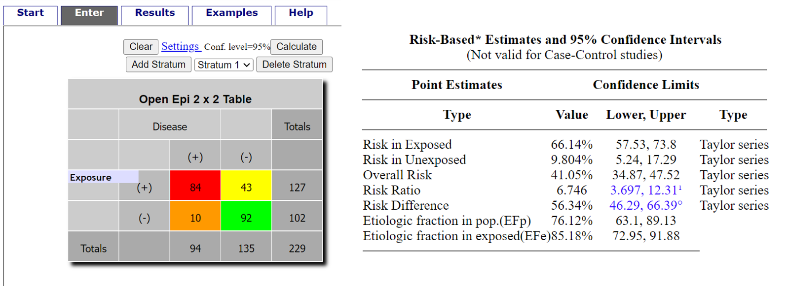
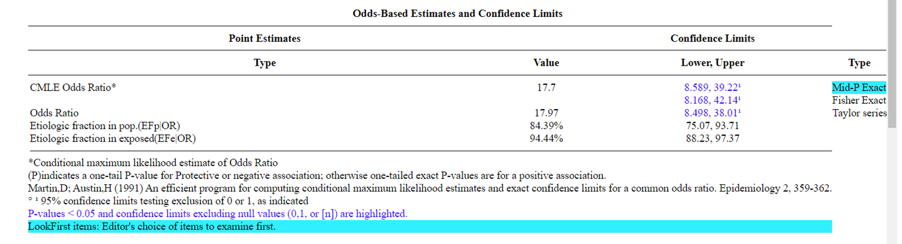
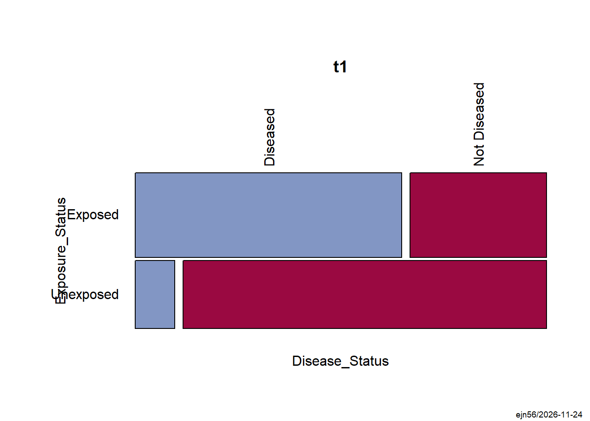
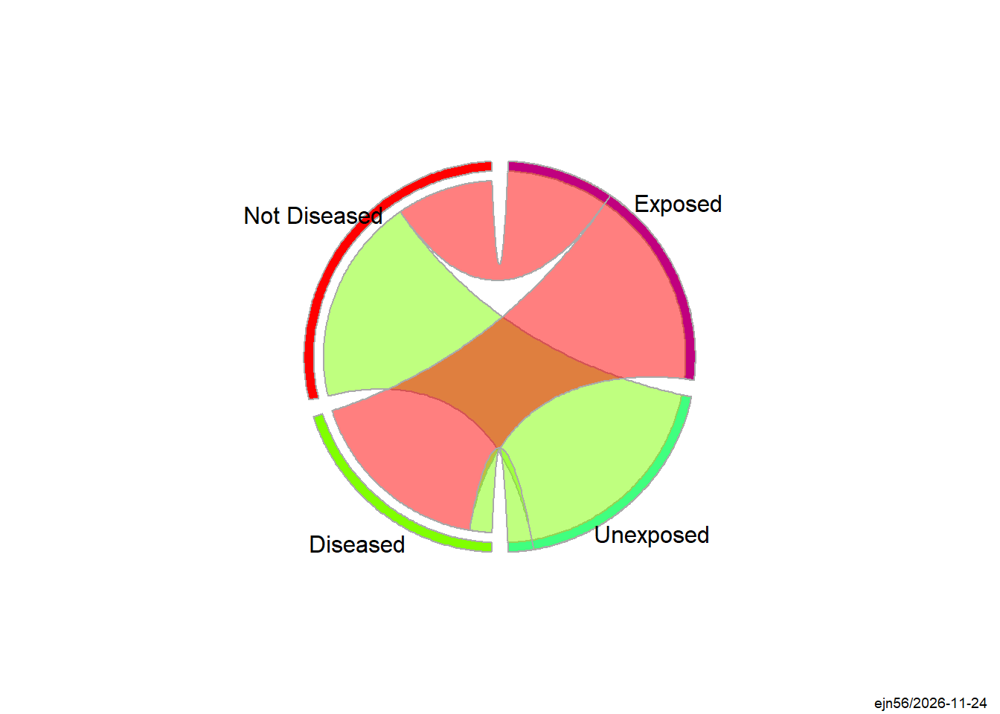
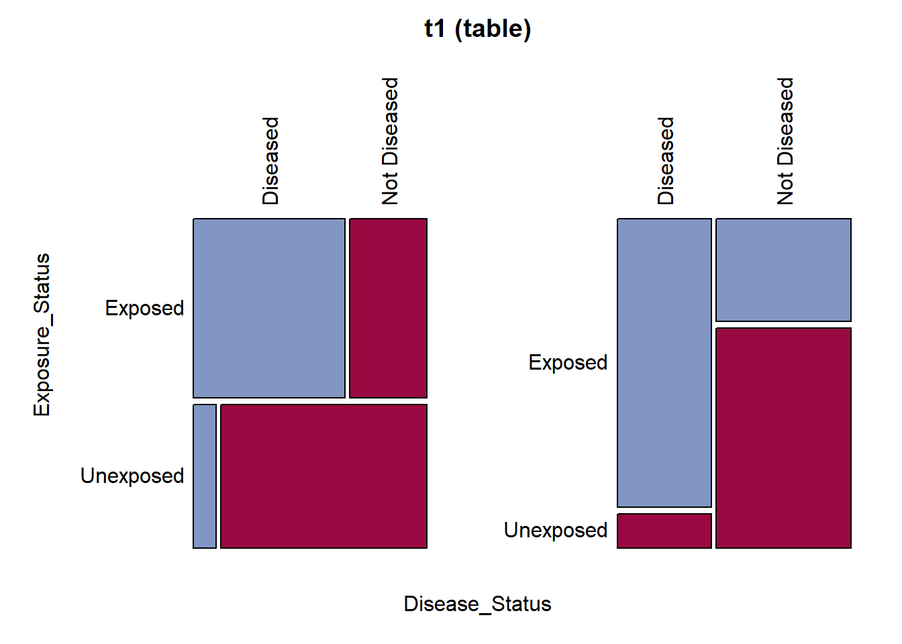

#---Input some data in classical 2x2 format---#
#---- This is like Using Openepi.com
# Option 1: Create table by ROWS
t1 = as.table(rbind(c(84,43), c(10,92)))
t1 A B
A 84 43
B 10 92Risk, odds, diagnostic tests, and stratified comparisons
EXPOSURE & OUTCOME · ASSOCIATION · STRATIFICATION
Four Cells, Powerful Questions
A simple 2×2 table can answer important questions about disease, exposure, and risk. Build tables in R, interpret measures of association, and explore how study design shapes the results.
By the end of this lesson, you should be able to:
R and calculate measures of association (risk ratio, odds ratio, attributable risk, and diagnostic accuracy measures).Well, we have been working with 2x2 Tables all semester. Might as well use R to show how we got all of our fancy calculations. In fact, we are going to mimic our new favorite website, OpenEpi.com! In order to get started, we are going to need to create a 2x2 Table. I am going to use some base R coding as this really is the fastest way to make a 2x2 Table. Keep in mind that you may have line listed data, which I will address a little further down the page.
R from scratchLet’s suppose I want to recreate this table:
| Diseased | Not Diseased | |
|---|---|---|
| Exposed | 84 | 43 |
| Unexposed | 10 | 92 |
#---Input some data in classical 2x2 format---#
#---- This is like Using Openepi.com
# Option 1: Create table by ROWS
t1 = as.table(rbind(c(84,43), c(10,92)))
t1 A B
A 84 43
B 10 92# Option 2: Create table by COLUMNS
t2 = as.table(cbind(c(84,10), c(43, 92)))
t2 A B
A 84 43
B 10 92By default, this provides row and column names “A” and “B”, but those aren’t all that informative. Let’s give some names to our table object. We will do this by listing out the names we want for the rows, then the columns. We do this by using the dimnames() function - which will give names to the “dimensions” of the object.
#--- Let's add some names to our table object
#--- Syntax: dimnames(object) <- list(row_names, column_names)
dimnames(t1) <- list(Exposure_Status = c("Exposed", "Unexposed"),
Disease_Status = c("Diseased", "Not Diseased"))
t1 Disease_Status
Exposure_Status Diseased Not Diseased
Exposed 84 43
Unexposed 10 92Let’s also provide the marginal (total) values for our t1 table. This is done with the addmargins() function. It will add a row and column of totals to your table.
#--- Let's also add some row/column totals
addmargins(t1) Disease_Status
Exposure_Status Diseased Not Diseased Sum
Exposed 84 43 127
Unexposed 10 92 102
Sum 94 135 229epiRLet’s calculate some basic measures. We could do this by hand, but that doesn’t seem like the best use of our time. We can mimic what OpenEpi.com does using a variety of R packages. If you want to know more options, you can go the CRAN TaskView for Epidemiology. I will showcase the epiR and DescTools packages.
Risk ratios, odds ratios, and diagnostic accuracy measures answer different questions. Check the study design, the denominators, and the orientation of the 2×2 table before choosing or interpreting a measure. For a cohort table, a risk ratio compares risk among exposed and unexposed groups. For a case-control table, the odds ratio is usually the appropriate association measure. Always check the orientation of your rows and columns before interpreting results.
The epiR package operates just like OpenEpi.com. If you want more details, you can go here. You will need to specify the method in the epi.2by2 function (meaning choose your study design) and it will select which output to show you. This is to help you to remember to not use some of these measures based on your study design selection. Let’s look at this output and then compare it to OpenEpi.com.
Here is output for a Cohort (or Experimental) Study. Note that method="cohort.count".
Note: The epiR package will provide interpretations of these values for you if you include the interpret=TRUE argument.
library(epiR)
epi.2by2(t1, #this is your table object
method="cohort.count", #study design choice (cohort study here)
digits=2, # number of digits to round
conf.level=0.95, # confidence level (here it is 95%)
units=100, # multiplier for prevalence incidence (here it is per 100)
interpret = TRUE, # add descriptive interpretations (switch to T/F)
outcome= "as.columns") #states that 2x2 has outcomes in columns Outcome+ Outcome- Total Inc risk *
Exposure+ 84 43 127 66.14 (57.21 to 74.30)
Exposure- 10 92 102 9.80 (4.80 to 17.29)
Total 94 135 229 41.05 (34.61 to 47.72)
Point estimates and 95% CIs:
-------------------------------------------------------------------
Inc risk ratio 6.75 (3.70, 12.31)
Inc odds ratio 17.97 (8.50, 38.01)
Attrib risk in the exposed * 56.34 (46.29, 66.39)
Attrib fraction in the exposed (%) 85.18 (73.73, 91.91)
Attrib risk in the population * 31.24 (22.65, 39.84)
Attrib fraction in the population (%) 76.12 (63.76, 86.13)
E-value 12.97 (6.85, NA)
-------------------------------------------------------------------
Uncorrected chi2 test that OR = 1: chi2(1) = 74.196 Pr>chi2 = <0.001
Fisher exact test that OR = 1: Pr>chi2 = <0.001
Wald confidence limits
CI: confidence interval
* Outcomes per 100 population units
Measures of association strength:
The incidence risk of the outcome among those that were exposure positive was 6.75 (95% CI 3.7 to 12.31) times the incidence risk of the outcome among those that were exposure negative. The incidence odds of the outcome among those that were exposure positive was 17.97 (95% CI 8.5 to 38.01) times the incidence odds of the outcome among those that were exposure negative.
Measures of effect in the exposed:
Exposure to exposure changed the incidence risk of the outcome among those that were exposure positive by +56.34 (95% CI +46.29 to +66.39) per 100 population units. Among those that were exposure positive 85% (95% CI 74% to 92%) of the outcome cases were attributable to exposure.
Number needed to treat:
Exposure to exposure changed the incidence risk of the outcome among those that were exposure positive by +56.34 (95% CI +46.29 to +66.39) per 100 population units. The number needed to expose to exposure to increase the outcome frequency by one was 1.78 (95% CI 1.51 to 2.16).
Measures of effect in the population:
Exposure to exposure changed the incidence risk of the outcome among those that were exposure positive and exposure negative by +31.24 (95% CI +22.65 to +39.84) per 100 population units. Among those that were exposure positive and exposure negative 76% (95% CI 64% to 86%) of the outcome cases were attributable to exposure.
E-value:
An unmeasured confounder in this study would need to be associated with both exposure and the outcome by a risk ratio of at least 12.97 (each) to completely account for the observed odds ratio of 17.97. How does this compare to OpenEpi.com?

Here is output for a Case-Control Study. Note that method="case.control".
#---Case-Control Study
epi.2by2(t1, method="case.control", digits=2, conf.level=0.95,
units=100, interpret = F, outcome= "as.columns") Outcome+ Outcome- Total Odds
Exposed + 84 43 127 1.95 (1.35 to 2.85)
Exposed - 10 92 102 0.11 (0.05 to 0.19)
Total 94 135 229 0.70 (0.54 to 0.91)
Point estimates and 95% CIs:
-------------------------------------------------------------------
Exposure odds ratio 17.97 (8.50, 38.01)
Attrib fraction (est) in the exposed (%) 94.44 (88.34, 97.34)
Attrib fraction (est) in the population (%) 84.39 (79.52, 90.40)
E-value 7.95 (5.28, NA)
-------------------------------------------------------------------
Uncorrected chi2 test that OR = 1: chi2(1) = 74.196 Pr>chi2 = <0.001
Fisher exact test that OR = 1: Pr>chi2 = <0.001
Wald confidence limits
CI: confidence interval How does this compare to OpenEpi.com?

Here is output for a Cross-Sectional Study. Note that method="cross.sectional".
#---Cross-Sectional Study
epi.2by2(t1, method="cross.sectional", digits=2, conf.level=0.95,
units=100, interpret = F, outcome= "as.columns") Outcome+ Outcome- Total Prev risk *
Exposure+ 84 43 127 66.14 (57.21 to 74.30)
Exposure- 10 92 102 9.80 (4.80 to 17.29)
Total 94 135 229 41.05 (34.61 to 47.72)
Point estimates and 95% CIs:
-------------------------------------------------------------------
Prev risk ratio 6.75 (3.70, 12.31)
Prev odds ratio 17.97 (8.50, 38.01)
Attrib prev in the exposed * 56.34 (46.29, 66.39)
Attrib fraction in the exposed (%) 85.18 (73.73, 91.91)
Attrib prev in the population * 31.24 (22.65, 39.84)
Attrib fraction in the population (%) 76.12 (63.76, 86.13)
E-value 12.97 (6.85, NA)
-------------------------------------------------------------------
Uncorrected chi2 test that OR = 1: chi2(1) = 74.196 Pr>chi2 = <0.001
Fisher exact test that OR = 1: Pr>chi2 = <0.001
Wald confidence limits
CI: confidence interval
* Outcomes per 100 population units epiRRemember our friends sensitivity, specificity, positive predictive value, and negative predictive value?
You don’t? Some friend you are…
We can use the epiR package to calculate all of the diagnostic values for us! For more info, click here
#---Diagnostic Testing---#
epi.tests(t1, conf.level = 0.95) Outcome + Outcome - Total
Test + 84 43 127
Test - 10 92 102
Total 94 135 229
Point estimates and 95% CIs:
--------------------------------------------------------------
Apparent prevalence * 0.55 (0.49, 0.62)
True prevalence * 0.41 (0.35, 0.48)
Sensitivity * 0.89 (0.81, 0.95)
Specificity * 0.68 (0.60, 0.76)
Positive predictive value * 0.66 (0.57, 0.74)
Negative predictive value * 0.90 (0.83, 0.95)
Positive likelihood ratio 2.81 (2.17, 3.63)
Negative likelihood ratio 0.16 (0.09, 0.28)
False T+ proportion for true D- * 0.32 (0.24, 0.40)
False T- proportion for true D+ * 0.11 (0.05, 0.19)
False T+ proportion for T+ * 0.34 (0.26, 0.43)
False T- proportion for T- * 0.10 (0.05, 0.17)
Correctly classified proportion * 0.77 (0.71, 0.82)
--------------------------------------------------------------
* Exact CIsWe can also use classical 2×2 tables to investigate effect modification (EM) and confounding. We will compare stratum-specific measures of association and then examine the crude and adjusted estimates. Remember that differences across strata can suggest EM. When stratum-specific estimates are reasonably similar, a meaningful change from the crude to the adjusted estimate may suggest confounding. These comparisons require epidemiologic judgment, not just a single test.
Let’s use an example with MRSA. Suppose you want to explore whether age modifies or confounds the association between previous hospitalization and MRSA. We can stratify the data by age and create two 2×2 tables.
Young Age (< 55 yrs)
| MRSA | No MRSA | |
|---|---|---|
| Prev. Hosp. | 1097 | 828 |
| No Prev. Hosp. | 881 | 602 |
Old Age (>= 55 yrs)
| MRSA | No MRSA | |
|---|---|---|
| Prev. Hosp. | 1854 | 420 |
| No Prev. Hosp. | 368 | 568 |
epiR to analyze the strata together.The array() function combines our two 2×2 tables into a single object. The dim = c(2, 2, 2) argument tells R that we have two rows, two columns, and two strata. Here, the first stratum is younger participants and the second is older participants. You do not need to learn arrays in depth to use this one command.
In each 2×2 table, the rows represent previous hospitalization (yes, no) and the columns represent MRSA (yes, no). Keep this ordering consistent across both strata.
#---Effect Modification or Confounding by Age?---#
# Young age (<55 years)
s1 <- as.table(rbind(c(1097, 828), c(881, 602)))
# Older age (55+ years)
s2 <- as.table(rbind(c(1854, 420), c(368, 568)))
# Combine the two 2x2 tables into one stratified table
age_tab <- array(c(s1, s2), dim = c(2, 2, 2))
# stratum-specific estimates
epi.2by2(s1, method = "cohort.count",
outcome = "as.columns", digits = 2) Outcome+ Outcome- Total Inc risk *
Exposure+ 1097 828 1925 56.99 (54.74 to 59.21)
Exposure- 881 602 1483 59.41 (56.86 to 61.92)
Total 1978 1430 3408 58.04 (56.36 to 59.70)
Point estimates and 95% CIs:
-------------------------------------------------------------------
Inc risk ratio 0.96 (0.91, 1.02)
Inc odds ratio 0.91 (0.79, 1.04)
Attrib risk in the exposed * -2.42 (-5.76, 0.92)
Attrib fraction in the exposed (%) -4.25 (-10.36, 1.58)
Attrib risk in the population * -1.37 (-4.37, 1.63)
Attrib fraction in the population (%) -2.35 (-3.71, -0.88)
E-value 1.25 (NA, 1.00)
-------------------------------------------------------------------
Uncorrected chi2 test that OR = 1: chi2(1) = 2.014 Pr>chi2 = 0.156
Fisher exact test that OR = 1: Pr>chi2 = 0.161
Wald confidence limits
CI: confidence interval
* Outcomes per 100 population units epi.2by2(s2, method = "cohort.count",
outcome = "as.columns", digits = 2) Outcome+ Outcome- Total Inc risk *
Exposure+ 1854 420 2274 81.53 (79.87 to 83.11)
Exposure- 368 568 936 39.32 (36.17 to 42.53)
Total 2222 988 3210 69.22 (67.59 to 70.82)
Point estimates and 95% CIs:
-------------------------------------------------------------------
Inc risk ratio 2.07 (1.91, 2.25)
Inc odds ratio 6.81 (5.76, 8.06)
Attrib risk in the exposed * 42.21 (38.70, 45.73)
Attrib fraction in the exposed (%) 51.78 (47.76, 55.65)
Attrib risk in the population * 29.90 (26.39, 33.42)
Attrib fraction in the population (%) 43.20 (39.94, 46.49)
E-value 3.57 (3.23, NA)
-------------------------------------------------------------------
Uncorrected chi2 test that OR = 1: chi2(1) = 554.607 Pr>chi2 = <0.001
Fisher exact test that OR = 1: Pr>chi2 = <0.001
Wald confidence limits
CI: confidence interval
* Outcomes per 100 population units # Analyze the strata together
epi.2by2(age_tab, method = "cohort.count",
outcome = "as.columns", digits = 2) Outcome+ Outcome- Total Inc risk *
Exposure+ 2951 1248 4199 70.28 (68.87 to 71.66)
Exposure- 1249 1170 2419 51.63 (49.62 to 53.64)
Total 4200 2418 6618 63.46 (62.29 to 64.62)
Point estimates and 95% CIs:
-------------------------------------------------------------------
Inc risk ratio (crude) 1.36 (1.30, 1.42)
Inc risk ratio (M-H) 1.34 (1.28, 1.41)
Inc risk ratio (crude:M-H) 1.01
Inc odds ratio (crude) 2.22 (2.00, 2.46)
Inc odds ratio (M-H) 1.99 (1.80, 2.20)
Inc odds ratio (crude:M-H) 1.11
Attrib risk in the exposed (crude) * 18.65 (16.22, 21.07)
Attrib risk in the exposed (M-H) * 17.30 (14.88, 19.72)
Attrib risk (crude:M-H) 1.08
E-value (crude) 2.06 (1.93, NA)
E-value (M-H) 2.02 (1.88, NA)
-------------------------------------------------------------------
M-H test of homogeneity of IRRs: chi2(1) = 228.452 Pr>chi2 = <0.001
M-H test of homogeneity of ORs: chi2(1) = 330.641 Pr>chi2 = <0.001
Test that M-H adjusted OR = 1: chi2(1) = 195.190 Pr>chi2 = <0.001
Wald confidence limits
M-H: Mantel-Haenszel; CI: confidence interval
* Outcomes per 100 population units EM or Confounding by Age? Example Write-Up
The results suggest that age is an effect modifier of the relationship between previous hospitalization and MRSA infection.
Among younger individuals (under 55 years), previous hospitalization was associated with approximately the same risk of MRSA infection as no previous hospitalization (RR ≈ 0.96). However, among older individuals (55 years and older), those with a previous hospitalization had approximately 2.07 times the risk of MRSA infection compared with those without a previous hospitalization.
These findings suggest that the relationship between previous hospitalization and MRSA infection differs substantially by age. Because the stratum-specific risk ratios are meaningfully different, we have evidence of effect modification. Rather than reporting a single overall risk ratio, we should report the age-specific estimates to accurately describe this relationship.
DescToolsFor this to work, you have to feed these functions a table object (or matrix). You will notice these appear as “Values” in your R Environment and not as data.frame objects. So keep t1 (or t2) from above as a table object. For more information on contingency-table methods in DescTools, see this vignette.
Odds Ratios
Let’s start with the odds ratio (OR). In DescTools, this is done with the OddsRatio() function. We will need to specify our table object and the confidence level we want to calculate (almost always it is 95%).
# install.packages("DescTools")
library(DescTools)
#---Odds Ratio: OddsRatio() ---#
OddsRatio(t1, conf.level = 0.95)odds ratio lwr.ci upr.ci
17.972093 8.498092 38.008076 Relative Risk
We will also calculate the risk ratio or relative risk (RR). In DescTools, this is done with the RelRisk() function. Just like the OddsRatio() function, we supply it with a table object and the confidence level we seek.
#---Relative Risk: RelRisk() ---#
RelRisk(t1, conf.level = 0.95)rel. risk lwr.ci upr.ci
6.746457 3.806903 12.362369 The DescTools package has some quick plotting capabilities, which can help you visualize your table quickly. I will show you two ways:
PlotMosaic(t1)
PlotCirc(t1)
You can also call an exhaustive list of measures using the Desc() function for DescTools:
Desc(t1)──────────────────────────────────────────────────────────────────────────────
t1 (table)
Summary:
n: 229, rows: 2, columns: 2
Pearson's Chi-squared test (cont. adj):
X-squared = 71.886, df = 1, p-value < 2.2e-16
Fisher's exact test p-value < 2.2e-16
McNemar's chi-squared = 19.321, df = 1, p-value = 1.105e-05
estimate lwr.ci upr.ci'
odds ratio 17.972 8.498 38.008
rel. risk (col1) 6.746 3.696 12.313
rel. risk (col2) 0.375 0.292 0.483
prop. diff 0.563 0.454 0.656
Contingency Coeff. 0.495
Cramer's V 0.569
Kendall Tau-b 0.569
Disease_Status Diseased Not Diseased Sum
Exposure_Status
Exposed freq 84 43 127
perc 36.7% 18.8% 55.5%
p.row 66.1% 33.9% .
p.col 89.4% 31.9% .
Unexposed freq 10 92 102
perc 4.4% 40.2% 44.5%
p.row 9.8% 90.2% .
p.col 10.6% 68.1% .
Sum freq 94 135 229
perc 41.0% 59.0% 100.0%
p.row . . .
p.col . . .
────────────────────
' 95% conf. level
In the real world, we don’t have data summarized for us. We take a line-listing (think each row in the data equates to a person) dataset and then summarize it. We then use the summarized data to conduct our analysis.
So let’s create a line-listed dataset from what we have above. Normally your data would already be in this format! I am just showing you that what you learned above (i.e., the classroom 2x2 table approach) translates to REAL data:
library(DescTools)
#---Effect Modification or Confounding by Age?---#
# Young age (<55 years)
s1 <- as.table(rbind(c(1097, 828), c(881, 602)))
# Older age (55+ years)
s2 <- as.table(rbind(c(1854, 420), c(368, 568)))
#---Give some meaningful names
dimnames(s1) <- list(Exposed = c("Yes", "No"),
Diseased = c("Yes", "No"))
dimnames(s2) <- list(Exposed = c("Yes", "No"),
Diseased = c("Yes", "No"))
#---Creates a line listing of the tables
listing_s1 = Untable(s1)
listing_s2 = Untable(s2)
#---View the data
head(listing_s1) Exposed Diseased
1 Yes Yes
2 Yes Yes
3 Yes Yes
4 Yes Yes
5 Yes Yes
6 Yes Yeshead(listing_s2) Exposed Diseased
1 Yes Yes
2 Yes Yes
3 Yes Yes
4 Yes Yes
5 Yes Yes
6 Yes YesNow that I have some data that mimics your next internship, we will summarize the line-listed data into tables and use epiR again. Notice that this uses the same stratified approach as above.
# summarize the line-listed data
ls1 <- table(listing_s1$Exposed, listing_s1$Diseased)
ls2 <- table(listing_s2$Exposed, listing_s2$Diseased)
# Combine the two tables and analyze them
listing_tab <- array(c(ls1, ls2), dim = c(2, 2, 2))
epi.2by2(listing_tab, method = "cohort.count",
outcome = "as.columns", digits = 2) Outcome+ Outcome- Total Inc risk *
Exposure+ 2951 1248 4199 70.28 (68.87 to 71.66)
Exposure- 1249 1170 2419 51.63 (49.62 to 53.64)
Total 4200 2418 6618 63.46 (62.29 to 64.62)
Point estimates and 95% CIs:
-------------------------------------------------------------------
Inc risk ratio (crude) 1.36 (1.30, 1.42)
Inc risk ratio (M-H) 1.34 (1.28, 1.41)
Inc risk ratio (crude:M-H) 1.01
Inc odds ratio (crude) 2.22 (2.00, 2.46)
Inc odds ratio (M-H) 1.99 (1.80, 2.20)
Inc odds ratio (crude:M-H) 1.11
Attrib risk in the exposed (crude) * 18.65 (16.22, 21.07)
Attrib risk in the exposed (M-H) * 17.30 (14.88, 19.72)
Attrib risk (crude:M-H) 1.08
E-value (crude) 2.06 (1.93, NA)
E-value (M-H) 2.02 (1.88, NA)
-------------------------------------------------------------------
M-H test of homogeneity of IRRs: chi2(1) = 228.452 Pr>chi2 = <0.001
M-H test of homogeneity of ORs: chi2(1) = 330.641 Pr>chi2 = <0.001
Test that M-H adjusted OR = 1: chi2(1) = 195.190 Pr>chi2 = <0.001
Wald confidence limits
M-H: Mantel-Haenszel; CI: confidence interval
* Outcomes per 100 population units The table() function counts the observations in each exposure/outcome combination. We then combine the two tables using the same array() command introduced above. The analysis is the same whether we started with published counts or a line-listed dataset.
The antimicrobial-use example above uses 1,000 for the final cell of the second stratum, as in the original analysis code. The practice table below uses 1,888 for that cell. Verify which value belongs in the teaching example before students compare the results.
Copy the tasks into an R Script and put your skills to the test.
# ============================================================
# STRATIFIED ANALYSIS : STUDENT
# Work through the tasks in order in your R Project.
# You need to load the tidyverse package to complete the tasks.
# ============================================================
# PART 1: BASIC 2x2 TABLE ANALYSIS -----------------------
# TASK 0: Load the necessary libraries
# TASK 1: Create a 2x2 table of these data
# | | Diseased | Not Diseased |
# |----------:|:--------:|:------------:|
# | Exposed | 68 | 56 |
# | Unexposed | 22 | 91 |
# TASK 2: What is the RR for this 2x2 table? Is the RR statistically significant?
# TASK 4: What is the AR%? Is the AR% statistically significant?
# TASK 5: What is the OR from this same 2x2 table? Is it statistically significant?
# PART 2: STRATIFIED ANALYSIS ----------------------------
# TASK 6: Create stratified 2x2 tables and combine them:
# **Yes: Antimicrobial Use**
# | | MRSA | No MRSA |
# |---------------:|:----:|:-------:|
# | Prev. Hosp. | 1426 | 349 |
# | No Prev. Hosp. | 361 | 170 |
# **No: Antimicrobial Use**
# | | MRSA | No MRSA |
# |---------------:|:----:|:-------:|
# | Prev. Hosp. | 1525 | 899 |
# | No Prev. Hosp. | 888 | 1888 |
# TASK 7: What is the RR for each stratum? Is it statistically significant?
# TASK 8: Is there evidence of EM, Confounding, or Neither?
# TASK 9: What would be the appropriate measure(s) to report?